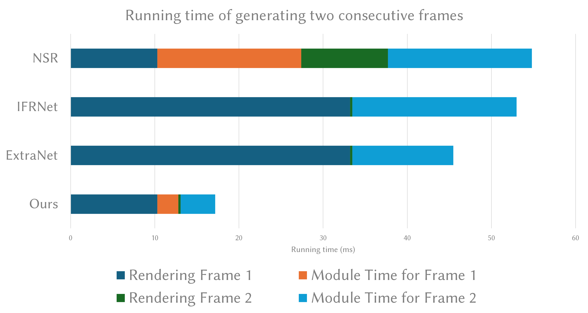

We introduce ExtraSS, a novel framework that combines spatial super sampling and frame extrapolation to enhance real-time rendering performance.
By integrating these techniques, our approach achieves a balance between performance and quality, generating temporally stable and high-quality, high-resolution results. Leveraging lightweight modules on warping and the Extra-SS network for refinement, we exploit spatial-temporal information, improve rendering sharpness, handle moving shadings accurately, and generate temporally stable results. Computational costs are significantly reduced compared to traditional rendering methods, enabling higher frame rates and alias-free high resolution results.
Evaluation using Unreal Engine demonstrates the benefits of our framework over conventional individual spatial or temporal super sampling methods, delivering improved rendering speed and visual quality. With its ability to generate temporally stable high-quality results, our framework creates new possibilities for real-time rendering applications, advancing the boundaries of performance and photo-realistic rendering in various domains.
Our framework consists of three modules: G-buffer Guided Warping, Shading Refinement, and Joint Extra-SS Network, for jointly spatial super samping and frame extrapolation.
Our G-buffer guided warping module is designed to handle the ghosting artifacts and improve the sharpness.
Traiditional warping directly warps the pixels of the corresponding areas, which may cause ghosting artifacts in the disocclusion areas.
Occlusion motion vectors [Zeng et al. 2021] consider the motion of the occluders and use counter directions to refine motion vectors to fix some ghosting artifacts in the disocclusion areas. But it still fails when background becomes complex.
Our G-buffer guided warping module uses the G-buffer information to guide the warping process. It can handle the ghosting artifacts in the disocclusion areas and improve the sharpness.
Shading refinement modules focuses on shading effects that are not handled by motion vectors including shadows and reflection. Our designed flow-refinement network will predict a residual and a flow to refine incorrect shadings.
After refinement, the lagging shadows will be fixed and consistent with the character's motion.
The last component of our framework is the joint Extra-SS network. It takes either generated images from our modules or rendered images from rendering engine as input and outputs the final rendered images with higher resolution and futher refined shadings.
We show our full-frame results from 15 fps and 540p/720p/1080p to 30fps and 1080p/1440p/2160p.
For more comparison with baselines, please refer to our Supplementary Video .
We show the running time of generating two consecutive frames of different methods on BUNKER scene in generating 1080p frames.

Our method not only spends less time in rendering engine side, but also faster than other methods in terms of methods themselves. As a result, our method is more efficient than other methods in total. Please refer to our main paper and supplementary document for more details about our performance.
@inproceedings{wu2023extrass,
author = {Wu, Songyin and Kim, Sungye and Zeng, Zheng and Vembar, Deepak and Jha, Sangeeta and Kaplanyan, Anton and Yan, Ling-Qi},
title = {ExtraSS: A Framework for Joint Spatial Super Sampling and Frame Extrapolation},
year = {2023},
url = {https://doi.org/10.1145/3610548.3618224},
booktitle = {SIGGRAPH Asia 2023 Conference Papers},
articleno = {92},
numpages = {11},
}